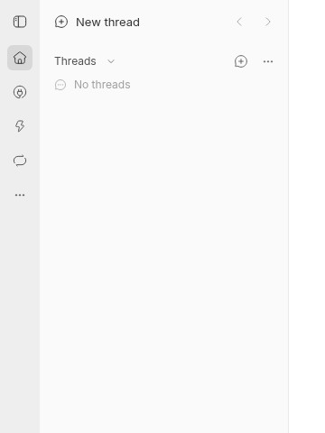
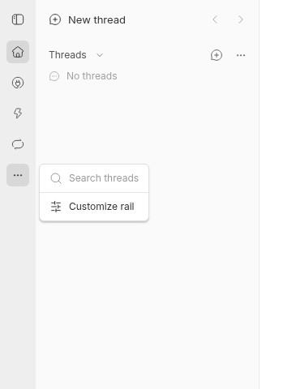

#5491 · Rail menu positioning verified on main
Verdict: ALREADY FIXED · Root-cause confidence: high
1. TL;DR
The report describes a small navigation menu opening near Home instead of beside the More button that opened it. That behavior existed in the historical rail implementation: it deliberately offset the menu upward by the distance between Home and More. Trusted main already removes that offset, through PR #5362, merged October 11, 2026. Two clean checkouts of main both pass the existing 19-test rail suite and show the actual menu top at 202 pixels, exactly matching More rather than Home at 50 pixels. The installed 0.46.0 desktop artifact was not run, so this is a main-branch finding, not a claim about that installed release.
2. Claims vs findings
| Claim | Finding | Evidence |
|---|---|---|
| The first menu opened from More sits near the rail's first button. | Refuted on current main; supported by historical source. | Both live checks: More top 202, Home top 50, menu top 202. The historical implementation supplied a Home-relative alignOffset. |
| The menu should appear beside its trigger. | Verified on current main. | Current DropdownMenuTrigger wraps More; content uses right/start placement with no upward offset. |
| The behavior occurs in the installed 0.46.0 desktop release. | Unverified. | No installed desktop artifact or native desktop session was used. The shared web renderer and existing DOM regression were checked. |
3. Environment
- Public repository: get-bb/bb. Trusted main:
f526a8b9b3de387c23e3840cdda8a5cf0b556fd0. - Linux 4.19.0-gvisor x86_64; Node v22.19.0; pnpm 9.15.0; Chrome for Testing 155.0.8059.79; BB Browser Automation plugin, local headless backend.
- First checkout:
<work>/base; app/server/host ports 12106/20106/28106. Second checkout:<work>/verify; ports 17890/25890/33890. - Each instance had a new checkout-derived development data directory with an ownership marker before startup. No production database, imported store, signed-in account, or real agent turn was used.
- Both frozen installs and full Turbo builds succeeded, 66 build tasks each. Browser setup required Chrome and OS runtime libraries; repository dependencies were not changed.
- The verification inventory reported an unrelated missing owner for the browser CLI family. This was not changed and does not invalidate direct rail measurements. A first navigation to the second Vite instance timed out while initializing; a fresh snapshot showed setup complete and the live check subsequently succeeded.
4. Minimal reproduction
- From a trusted clone, fetch main and create two distinct detached worktrees at the recorded commit:
git fetch origin main git worktree add --detach /tmp/bb-5491-first f526a8b9b3de387c23e3840cdda8a5cf0b556fd0 git worktree add --detach /tmp/bb-5491-second f526a8b9b3de387c23e3840cdda8a5cf0b556fd0
- In each checkout, install, build and run the existing behavioral regression:
pnpm install --frozen-lockfile --prefer-offline pnpm exec turbo run build pnpm exec turbo run test --filter=@bb/app -- src/components/sidebar/AppNavRail.test.tsx
Expected: menu placement regression passes; with mocked Home at 40 and More at 200, the positioning wrapper becomes
translate(52px, 200px), not a Home-relative position.First checkout: Test Files 1 passed (1) Tests 19 passed (19) Second clean checkout: Test Files 1 passed (1) Tests 19 passed (19) - For the visual check, resolve
resolveCurrentDevInstanceConfig(process.cwd())frompackages/config/src/runtime.ts, create its fresh data directory, and put an ownership marker inside before runningpnpm dev. This prevents adoption of legacy development data. Open the printed app URL in a new Browser Automation page at 1280×900. - Choose Skip setup. In the left navigation rail, click More, not the footer's separate More button. Wait until the opening animation settles. Read the More, Home, and menu bounding rectangles.
First checkout: { moreTop: 202, homeTop: 50, menuTop: 202 }
Second checkout: { moreTop: 202, homeTop: 50, menuTop: 202 }
Actual result on main: the menu opens beside More, not near Home. The screenshots are real browser captures, converted from JPEG to PNG and cropped to the upper-left 360×480 region; no UI was synthesized or repositioned.



The complete trusted regression suite is included inline below, with the verbatim pass totals above and browser probe in the Appendix. Raw evidence is retained outside the public reports repository. The existing suite is reproduced here, not a newly invented or mocked implementation.
Complete reproduction test, including fixtures
// @vitest-environment jsdom
import {
act,
cleanup,
fireEvent,
render,
screen,
waitFor,
within,
} from "@testing-library/react";
import { useState, type ReactNode } from "react";
import { createStore, Provider } from "jotai";
import { MemoryRouter, useLocation } from "react-router-dom";
import {
afterEach,
beforeAll,
beforeEach,
describe,
expect,
it,
vi,
} from "vitest";
import { CompactViewportOverrideProvider } from "@bb/shared-ui/hooks/use-compact-viewport";
import { TooltipProvider } from "@bb/shared-ui/tooltip";
import {
SidebarProvider,
SidebarTrigger,
useCloseMobileSidebar,
} from "@/components/ui/sidebar";
import { AppLayoutSidebar } from "@/components/layout/AppLayoutSidebar";
import {
pluginNavPanelOrderAtom,
pluginNavVisiblePanelKeysAtom,
} from "@/components/plugin/pluginNavSidebarAtoms";
import {
markPluginFrontendsSettled,
resetPluginFrontendBootStateForTest,
} from "@/lib/plugin-frontend-boot-state";
import {
resetPluginSlotStoreForTest,
setPluginSlotRegistrations,
} from "@/lib/plugin-slots";
import { writeLastKnownPluginNavPanelChrome } from "@/lib/plugin-nav-panel-chrome";
import {
AUTOMATIONS_PLUGIN_ID,
getPluginPanelRoutePath,
getThreadRoutePath,
isPluginsRoutePath,
SETTINGS_ROUTE_PATH,
} from "@/lib/route-paths";
import { makePluginRegistrationSet as registrationSet } from "@/test/fixtures/plugins";
import { SidebarUpdatesBadge } from "./SidebarUpdatesBadge";
import {
AppNavRail,
NavRailNewThreadButton,
NavRailSettingsButton,
} from "./AppNavRail";
import { SidebarVisibilityCustomize } from "./SidebarVisibilityControls";
import { SidebarNavigationModelProvider } from "./SidebarNavigationModel";
const mocks = vi.hoisted(() => ({
dispatch: vi.fn(),
onNavigate: vi.fn(),
onNewChat: vi.fn(),
}));
vi.mock("@/components/commands/AppCommandProvider", () => ({
useAppCommandRunner: () => ({
dispatch: mocks.dispatch,
isCommandAvailable: () => true,
}),
useAppCommandShortcut: () => null,
useIsAppCommandModifierHeld: () => false,
}));
vi.mock("@/views/useMobileRecentsThreadReveal", () => ({
useMobileRecentsThreadReveal: () => {},
}));
vi.mock("@/components/sidebar/AppSidebar", () => ({
AppSidebar: ({
renderRail,
railFooter,
}: {
railFooter: ReactNode;
renderRail: (customize: {
isOpen: boolean;
onOpenChange: () => void;
}) => ReactNode;
}) => (
<>
{renderRail({ isOpen: false, onOpenChange: () => {} })}
{railFooter}
</>
),
}));
vi.mock("@/components/settings/SettingsSidebar", () => ({
SettingsSidebar: () => null,
}));
vi.mock("@/components/tools/ResourceSidebar", () => ({
ResourceSidebar: () => null,
}));
vi.mock("@/hooks/useUpdateInventory", () => ({
useUpdateInventory: () => ({
appUpdateAvailable: true,
desktopUpdateReady: false,
machines: [],
isLoading: false,
}),
}));
vi.mock("@/hooks/queries/system-queries", () => ({
useSystemProviders: () => ({ data: [] }),
}));
vi.mock("@/hooks/useMachineAttention", () => ({
useMachineAttention: () => ({ label: null }),
}));
vi.mock("@/components/provider-cli/provider-cli-install", () => ({
useProviderCliInstallRunner: () => ({ runningJobKey: null }),
}));
const THREAD_PATH = getThreadRoutePath({
projectId: "proj_one",
threadId: "thr_one",
});
const ALL_KEYS = [
"__bb__/new-thread",
"__bb__/search-threads",
"__bb__/extensions",
"__bb__/skills",
"garden/docs",
];
const DOCS_PATH = getPluginPanelRoutePath({ pluginId: "garden", path: "docs" });
const AUTOMATIONS_PLUGIN_PANEL_PATH = "automations";
function RailHarness({ useLayout = false }: { useLayout?: boolean }) {
const closeMobileSidebar = useCloseMobileSidebar();
const location = useLocation();
const isSettings = location.pathname.startsWith(SETTINGS_ROUTE_PATH);
const isAppMode = !isSettings && !isPluginsRoutePath(location.pathname);
const [isCustomizing, setCustomizing] = useState(false);
return (
<SidebarNavigationModelProvider
onNavigate={mocks.onNavigate}
onNewChat={mocks.onNewChat}
splitEnabled={false}
>
{useLayout ? (
<>
<AppLayoutSidebar
mode={isSettings ? "settings" : "app"}
onResizeMouseDown={() => {}}
isResizing={false}
settingsRoutePath={SETTINGS_ROUTE_PATH}
/>
<SidebarTrigger />
<SidebarUpdatesBadge onNavigate={closeMobileSidebar} />
</>
) : (
<>
<AppNavRail
isAppMode={isAppMode}
customize={{ isOpen: isCustomizing, onOpenChange: setCustomizing }}
/>
<NavRailSettingsButton
isSettingsActive={isSettings}
settingsRoutePath={SETTINGS_ROUTE_PATH}
/>
</>
)}
<NavRailNewThreadButton />
<output data-testid="pathname">{location.pathname}</output>
</SidebarNavigationModelProvider>
);
}
function renderRail(
initialPath: string,
options: {
visibleKeys?: string[];
isCompactViewport?: boolean;
isFramed?: boolean;
useLayout?: boolean;
} = {},
) {
const store = createStore();
if (options.visibleKeys) {
store.set(pluginNavPanelOrderAtom, ALL_KEYS);
store.set(pluginNavVisiblePanelKeysAtom, options.visibleKeys);
}
return render(
<Provider store={store}>
<MemoryRouter initialEntries={[initialPath]}>
<CompactViewportOverrideProvider
isCompactViewport={options.isCompactViewport ?? false}
>
<TooltipProvider>
<SidebarProvider framed={options.isFramed ?? false}>
<RailHarness useLayout={options.useLayout} />
</SidebarProvider>
</TooltipProvider>
</CompactViewportOverrideProvider>
</MemoryRouter>
</Provider>,
);
}
function rail(): HTMLElement {
return screen.getByTestId("app-nav-rail");
}
function railButton(name: string): HTMLElement {
const button = Array.from(
document.querySelectorAll<HTMLButtonElement>(
'[data-testid="app-nav-rail"] button, button[aria-label="Settings"]',
),
).find((candidate) => candidate.getAttribute("aria-label") === name);
if (!button) throw new Error(`Expected a rail button named ${name}`);
return button;
}
function railLabels(): (string | null)[] {
return Array.from(
document.querySelectorAll<HTMLButtonElement>(
'[data-testid="app-nav-rail"] button, button[aria-label="Settings"]',
),
(button) => button.getAttribute("aria-label"),
);
}
function currentRailLabels(): (string | null)[] {
return Array.from(
document.querySelectorAll<HTMLButtonElement>(
'[data-testid="app-nav-rail"] button[aria-current="page"], button[aria-label="Settings"][aria-current="page"]',
),
(button) => button.getAttribute("aria-label"),
);
}
function pathname(): string | null {
return screen.getByTestId("pathname").textContent;
}
beforeAll(async () => {
await SidebarVisibilityCustomize.preload();
});
beforeEach(() => {
vi.clearAllMocks();
resetPluginFrontendBootStateForTest();
markPluginFrontendsSettled();
window.localStorage.clear();
setPluginSlotRegistrations(
"garden",
registrationSet({
navPanels: [
{
id: "docs",
title: "Docs",
icon: "BookOpen",
path: "docs",
component: () => null,
},
],
}),
);
});
afterEach(() => {
cleanup();
vi.useRealTimers();
resetPluginFrontendBootStateForTest();
resetPluginSlotStoreForTest();
window.localStorage.clear();
});
describe("AppNavRail", () => {
it("lists Home, the visible destinations, More, and Settings, with New thread left to the header", () => {
renderRail(THREAD_PATH);
expect(railLabels()).toEqual([
"Home",
"Plugins",
"Skills",
"Docs",
"More",
"Settings",
]);
expect(currentRailLabels()).toEqual(["Home"]);
});
it("moves the highlight from Home to a plugin panel and to Settings as the route changes", () => {
renderRail(THREAD_PATH);
fireEvent.click(railButton("Docs"));
expect(pathname()).toBe(DOCS_PATH);
expect(currentRailLabels()).toEqual(["Docs"]);
fireEvent.click(railButton("Settings"));
expect(pathname()).toBe(SETTINGS_ROUTE_PATH);
expect(currentRailLabels()).toEqual(["Settings"]);
fireEvent.click(railButton("Plugins"));
expect(currentRailLabels()).toEqual(["Plugins"]);
});
it("keeps a plugin panel highlighted on its nested routes", () => {
renderRail(`${DOCS_PATH}/guides/getting-started.md`);
expect(currentRailLabels()).toEqual(["Docs"]);
});
it("lists the Automations panel as a destination", () => {
setPluginSlotRegistrations(
AUTOMATIONS_PLUGIN_ID,
registrationSet({
navPanels: [
{
id: AUTOMATIONS_PLUGIN_PANEL_PATH,
title: "Automations",
icon: "Calendar",
path: AUTOMATIONS_PLUGIN_PANEL_PATH,
component: () => null,
},
],
}),
);
renderRail(THREAD_PATH);
expect(railButton("Automations")).toBeDefined();
});
it("draws a remembered plugin panel before boot and keeps the same button when the plugin registers", () => {
resetPluginSlotStoreForTest();
resetPluginFrontendBootStateForTest();
writeLastKnownPluginNavPanelChrome([
{
pluginId: "demo",
id: "board",
path: "board",
title: "Demo board",
icon: "columns",
},
]);
renderRail(THREAD_PATH);
const remembered = railButton("Demo board");
act(() => {
setPluginSlotRegistrations(
"demo",
registrationSet({
navPanels: [
{
id: "board",
title: "Demo board",
icon: "columns",
path: "board",
component: () => null,
},
],
}),
);
markPluginFrontendsSettled();
});
expect(railButton("Demo board")).toBe(remembered);
});
it("drops a remembered plugin panel that never registers once frontends have settled", () => {
resetPluginSlotStoreForTest();
resetPluginFrontendBootStateForTest();
writeLastKnownPluginNavPanelChrome([
{
pluginId: "ghost",
id: "board",
path: "board",
title: "Ghost board",
icon: "columns",
},
]);
renderRail(THREAD_PATH);
expect(railButton("Ghost board")).toBeDefined();
act(() => markPluginFrontendsSettled());
expect(railLabels()).not.toContain("Ghost board");
});
it("returns Home to the last thread, skipping plugin panels and Settings visited since", () => {
renderRail(THREAD_PATH);
fireEvent.click(railButton("Docs"));
fireEvent.click(railButton("Settings"));
fireEvent.click(railButton("Home"));
expect(pathname()).toBe(THREAD_PATH);
expect(currentRailLabels()).toEqual(["Home"]);
});
it("returns Home to the last thread after settings navigation closes the compact sidebar", () => {
vi.useFakeTimers();
renderRail(THREAD_PATH, { isCompactViewport: true, useLayout: true });
fireEvent.click(screen.getByRole("button", { name: "Toggle Sidebar" }));
act(() => vi.advanceTimersByTime(250));
fireEvent.click(screen.getByRole("link", { name: "bb update available" }));
expect(pathname()).toBe(`${SETTINGS_ROUTE_PATH}/updates`);
act(() => vi.advanceTimersByTime(250));
fireEvent.click(screen.getByRole("button", { name: "Toggle Sidebar" }));
act(() => vi.advanceTimersByTime(250));
fireEvent.click(railButton("Home"));
expect(pathname()).toBe(THREAD_PATH);
expect(currentRailLabels()).toEqual(["Home"]);
});
it("sends Home to a new thread when the session started outside the thread list", () => {
renderRail(SETTINGS_ROUTE_PATH);
expect(currentRailLabels()).toEqual(["Settings"]);
fireEvent.click(railButton("Home"));
expect(pathname()).toBe("/");
});
it("dismisses the drawer for a plugin panel but not for destinations that swap the list beside the rail", () => {
renderRail(THREAD_PATH);
fireEvent.click(railButton("Plugins"));
fireEvent.click(railButton("Skills"));
fireEvent.click(railButton("Settings"));
fireEvent.click(railButton("Home"));
expect(pathname()).toBe(THREAD_PATH);
expect(mocks.onNavigate).not.toHaveBeenCalled();
fireEvent.click(railButton("Docs"));
expect(pathname()).toBe(DOCS_PATH);
expect(mocks.onNavigate).toHaveBeenCalledTimes(1);
});
it("does not mount a plugin panel's sidebar accessory", () => {
const accessoryMounted = vi.fn();
setPluginSlotRegistrations(
"garden",
registrationSet({
navPanels: [
{
id: "docs",
title: "Docs",
icon: "BookOpen",
path: "docs",
component: () => null,
experimental_sidebarAccessory: () => {
accessoryMounted();
return <span>492/1</span>;
},
},
],
}),
);
renderRail(THREAD_PATH);
expect(railButton("Docs")).toBeDefined();
expect(accessoryMounted).not.toHaveBeenCalled();
expect(rail().textContent).not.toContain("492/1");
});
it("keeps hidden destinations out of the rail", () => {
renderRail(THREAD_PATH, {
visibleKeys: ["__bb__/new-thread", "__bb__/extensions"],
});
expect(railLabels()).toEqual(["Home", "Plugins", "More", "Settings"]);
});
it("keeps hidden destinations reachable from More", async () => {
renderRail(THREAD_PATH);
fireEvent.keyDown(railButton("More"), { key: "Enter" });
fireEvent.click(
await screen.findByRole("menuitem", { name: "Search threads" }),
);
expect(mocks.dispatch).toHaveBeenCalledWith("thread.search", null);
});
it("opens the customize sheet from More on a compact viewport", async () => {
renderRail(THREAD_PATH, { isCompactViewport: true });
fireEvent.click(railButton("More"));
fireEvent.click(
await screen.findByRole("menuitem", { name: "Customize rail" }),
);
const editor = await screen.findByTestId("nav-rail-customize");
const list = within(editor).getByRole("list", {
name: "Sidebar navigation",
});
fireEvent.click(within(list).getByRole("checkbox", { name: /Skills/u }));
expect(railLabels()).toEqual([
"Home",
"Plugins",
"Docs",
"More",
"Settings",
]);
});
it("customizes the rail from a popover beside it without leaving Settings", async () => {
renderRail(THREAD_PATH);
fireEvent.click(railButton("Settings"));
fireEvent.keyDown(railButton("More"), { key: "Enter" });
fireEvent.click(
await screen.findByRole("menuitem", { name: "Customize rail" }),
);
const editor = await screen.findByTestId("nav-rail-customize");
expect(pathname()).toBe(SETTINGS_ROUTE_PATH);
expect(currentRailLabels()).toEqual(["Settings"]);
expect(rail().contains(editor)).toBe(false);
const list = within(editor).getByRole("list", {
name: "Sidebar navigation",
});
fireEvent.click(within(list).getByRole("checkbox", { name: /Skills/u }));
expect(railLabels()).toEqual([
"Home",
"Plugins",
"Docs",
"More",
"Settings",
]);
fireEvent.click(
within(list).getByRole("checkbox", { name: /Search threads/u }),
);
expect(railLabels()).toEqual([
"Home",
"Search threads",
"Plugins",
"Docs",
"More",
"Settings",
]);
fireEvent.click(within(editor).getByRole("button", { name: "Done" }));
await waitFor(() =>
expect(screen.queryByTestId("nav-rail-customize")).toBeNull(),
);
expect(document.activeElement).toBe(railButton("More"));
expect(pathname()).toBe(SETTINGS_ROUTE_PATH);
});
it("opens the customize popover at the top of the rail and keeps it there while More moves", async () => {
renderRail(THREAD_PATH);
let moreTop = 200;
vi.spyOn(railButton("Home"), "getBoundingClientRect").mockImplementation(
() => new DOMRect(12, 40, 28, 28),
);
vi.spyOn(railButton("More"), "getBoundingClientRect").mockImplementation(
() => new DOMRect(12, moreTop, 28, 28),
);
fireEvent.keyDown(railButton("More"), { key: "Enter" });
fireEvent.click(
await screen.findByRole("menuitem", { name: "Customize rail" }),
);
const editor = await screen.findByTestId("nav-rail-customize");
const wrapper = editor.closest<HTMLElement>(
"[data-radix-popper-content-wrapper]",
);
if (!wrapper) throw new Error("Expected the popover position wrapper");
await waitFor(() => expect(wrapper.style.transform).toContain("40px"));
const openedAt = wrapper.style.transform;
moreTop = 120;
fireEvent(window, new Event("resize"));
await new Promise((resolve) => setTimeout(resolve, 50));
expect(wrapper.style.transform).toBe(openedAt);
});
it("opens the More menu beside the More button instead of at the top of the rail", async () => {
renderRail(THREAD_PATH);
vi.spyOn(railButton("Home"), "getBoundingClientRect").mockImplementation(
() => new DOMRect(12, 40, 28, 28),
);
vi.spyOn(railButton("More"), "getBoundingClientRect").mockImplementation(
() => new DOMRect(12, 200, 28, 28),
);
const viewport = [
vi
.spyOn(document.documentElement, "clientWidth", "get")
.mockReturnValue(1280),
vi
.spyOn(document.documentElement, "clientHeight", "get")
.mockReturnValue(800),
];
try {
fireEvent.keyDown(railButton("More"), { key: "Enter" });
const menu = await screen.findByTestId("nav-rail-more-menu");
const wrapper = menu.closest<HTMLElement>(
"[data-radix-popper-content-wrapper]",
);
if (!wrapper) throw new Error("Expected the menu position wrapper");
await waitFor(() =>
expect(wrapper.style.transform).toBe("translate(52px, 200px)"),
);
} finally {
for (const spy of viewport) spy.mockRestore();
}
});
it("keeps the header New thread button when stored preferences leave New thread out", () => {
renderRail(THREAD_PATH, { visibleKeys: ["__bb__/extensions"] });
fireEvent.click(screen.getByRole("button", { name: "New thread" }));
expect(mocks.onNewChat).toHaveBeenCalledTimes(1);
});
it("offers no New thread row in Customize rail", async () => {
renderRail(THREAD_PATH);
fireEvent.keyDown(railButton("More"), { key: "Enter" });
fireEvent.click(
await screen.findByRole("menuitem", { name: "Customize rail" }),
);
const editor = await screen.findByTestId("nav-rail-customize");
const list = within(editor).getByRole("list", {
name: "Sidebar navigation",
});
expect(
within(list)
.getAllByRole("checkbox")
.map((checkbox) => checkbox.getAttribute("aria-label")),
).toEqual([
"Show Search threads in sidebar",
"Show Plugins in sidebar",
"Show Skills in sidebar",
"Show Docs in sidebar",
]);
expect(screen.getByRole("button", { name: "New thread" })).toBeDefined();
});
});
5. Root cause
The historical RailMoreMenu measured Home.top - More.top when the menu opened and passed that difference as alignOffset to right/start dropdown placement, with sticky="always". For a More button lower down the rail, this is a negative vertical offset. It cancels the distance to More, putting the menu near Home. This was an intentional cross-trigger alignment in that implementation, rather than an incorrect button ref or an Electron-specific positioning error.
Historical source before the merged fix (read only; not checked out or executed):
setTopItemOffset(
topItem.getBoundingClientRect().top -
button.getBoundingClientRect().top,
);
...
alignOffset={topItemOffset}
sticky="always"
Current source at the trusted base removes that calculation and binds the menu to its normal trigger:
<DropdownMenu>
<DropdownMenuTrigger asChild>
<RailButton ref={buttonRef} label="More">
...
</RailButton>
</DropdownMenuTrigger>
<DropdownMenuContent side="right" align="start"
sideOffset={RAIL_MENU_SIDE_OFFSET}
data-testid="nav-rail-more-menu">
Existing regression at the base commit exercises the real dropdown positioning against different Home and More rectangles. The separate Customize rail popover remains anchored to Home by design: its More trigger can move while rail items are being edited. That second editor is distinct from the first More menu in this report.
6. Proposed fix and pull-request decision
No new fix is needed on the tested main commit. Keep the normal More-trigger anchoring and the existing positioning regression. PR #5362 already applied the minimal repair on October 11, 2026, before this issue was filed on October 14. No new branch, commit, or duplicate PR was created because the prerequisite of reproducing the bug on trusted main is not satisfied.
If an installed desktop build still behaves differently, the next experiment is to record its source/build revision and repeat the same first-menu check after moving to a build containing commit 3aa5ef327093f2834f800370881ac0bed8f2d811. This investigation does not establish which released binary includes that commit.
7. Verification
The same agent repeated the check, not an independent verifier. The second worktree was created clean at f526a8b9b3de387c23e3840cdda8a5cf0b556fd0 before its frozen install and full build. It used a separate development store, different app/server/host ports, and a fresh named browser page. Its rail suite passed 19/19 tests and its settled live rectangles again measured More=202, Home=50, menu=202. Both worktrees remained clean (git status --short produced no tracked changes). The second run required no correction to the first finding.
Coverage limits: Linux headless web and the shared rail renderer were verified; native desktop 0.46.0 and iOS Safari were not. No production fix or mobile drawer change was made. The historical erroneous code was inspected only, in accordance with the trusted-main execution restriction.
8. Related work
- #5362: merged repair already present in the verified base.
- #5279: historical rail menu alignment change, referenced by the trusted repair history.
- No issue-linked open pull request was found in the issue timeline or the open-PR search for 5491 at investigation time.
9. Appendix
Execution used only current trusted main and repository-owned test code. Issue content was treated as untrusted claims; attachments and external issue links were not fetched. No issue-provided instructions, scripts, patches, tests, or PR branches were executed.
Operational command families: GitHub reads of type/fields/labels/timeline/PR metadata; SlopCop-wrapper classification writes; Git fetch and two detached worktrees; frozen pnpm installs; Turbo builds and rail tests; isolated pnpm dev; Browser Automation open/run/screenshot/close; stored artifact conversion with the repository's existing sharp dependency; publisher verification and report Git push. Temporary private port shares were revoked after diagnosing browser-host placement.
Browser probe (run after a fresh page snapshot; inspect the menu again after animation settlement):
const page = await browser.getPage("main");
console.log(await page.snapshot());
await page.click('button[aria-label="More"]');
console.log(await page.snapshot());
console.log(await page.evaluate(() => ({
moreTop: document.querySelector('button[aria-label="More"]').getBoundingClientRect().top,
homeTop: document.querySelector('button[aria-label="Home"]').getBoundingClientRect().top,
menuTop: document.querySelector('[data-testid="nav-rail-more-menu"]').getBoundingClientRect().top,
})));
Report generated October 14, 2026. ALREADY FIXED is the main-branch verdict; no-repro is the corresponding reproduction label.